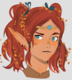
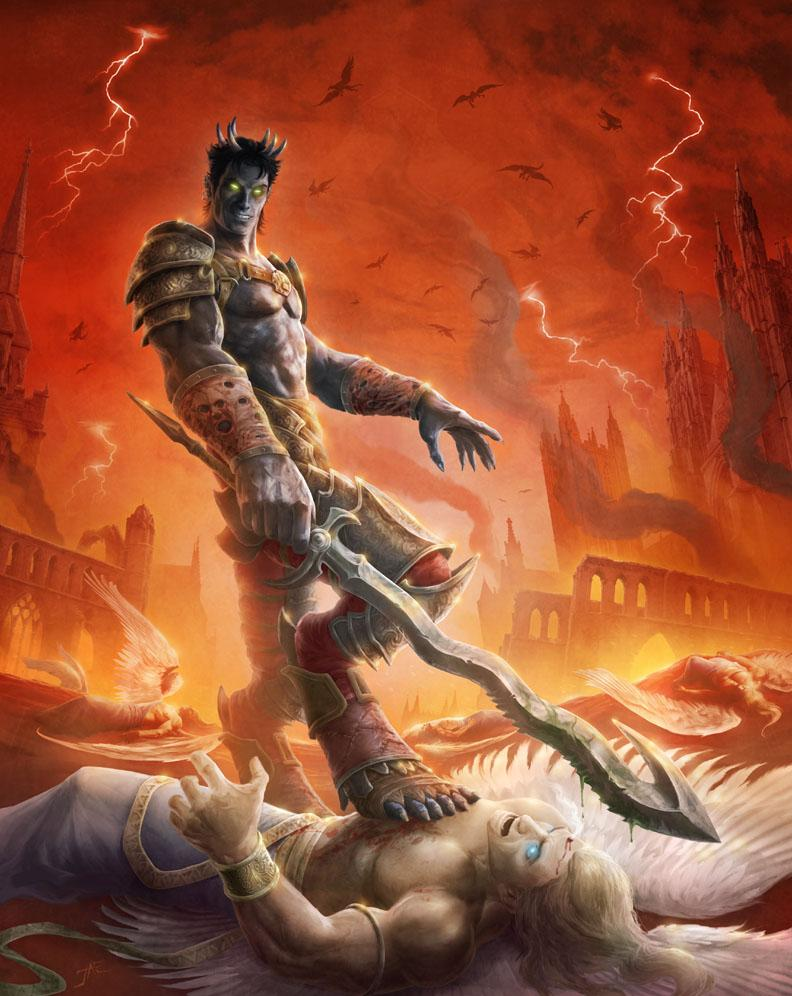

Vediamo la storia finora...
Persa a Toril
Asriel fu lasciato davanti alle porte di un orfanotrofio fin da neonato. Visse nell'orfanotrofio fino ai 13 anni insieme ad altri bambini e ragazzi come lui. Legò moltissimo con un bambino di nome Ravel, di qualche anno più grande. Timido e silenzioso, veniva spesso bullizzato dagli altri orfani, ma Ravel lo proteggeva sempre. Asriel aveva un piccolo segreto: riusciva a guarire piccole ferite con un semplice tocco. Una notte, fu portato via da qualcuno dell'orfanotrofio. Intontito dal sonno, non riuscì a capire cosa stesse succedendo. Lo fecero salire su un carro senza finestre e si addormentò.
Il circolo della fiamma

Al risveglio, Asriel si ritrovò in una stanza con una minuscola finestrella, da cui poteva vedere solo un piccolo spicchio di cielo. Non era solo: con lui c'era un enorme orco di nome Snickersnack (chiamato Snack), che aveva una forza sovrumana ma era molto stupido, e una piccola ragazzina dalla pelle grigia, un cangiante, di nome Lyra. La ragazzina raccontò ad Asriel che si trovavano in un luogo dove venivano fatti esperimenti su creature come loro. Preso dal panico, Asriel tentò di scappare, ma Snack e Lyra, che erano lì già da tempo, gli dissero che era impossibile. Lyra aveva già provato molte volte a scappare, trasformandosi in qualcuno del laboratorio, ma fallendo sempre. Da quel momento, Asriel trascorse alcuni anni intrappolato nel laboratorio, sottoposto a esperimenti di ogni tipo. Le persone del laboratorio avevano sempre il viso coperto; l'unica cosa che Asriel poteva vedere era il tatuaggio che avevano sulla mano. Lyra, Snack e Asriel divennero molto legati. Con il tempo, gli esperimenti divennero sempre più sporadici e i tre rimanevano chiusi nella cella. Lyra e Asriel concepirono un ultimo piano per fuggire, ma anche questo fallì e furono separati in celle diverse. Asriel non seppe più nulla dei suoi due amici. Quando si era ormai rassegnato al fatto che sarebbe morto in quella cella, una voce lo chiamò e qualcuno apparve sulla porta della cella. Gli promise libertà, ma in realtà era solo l'inizio di un'altra prigionia.
Ricerca di una cura
Asriel fu preso da Graz’zt, il Principe Oscuro di Azzagrat, attratto dalla sua bellezza, che lo voleva con sé. Graz'zt, in cambio della libertà dal laboratorio, legò Asriel a sé come warlock. Lo portò nel suo palazzo di cristallo e lo costrinse a vivere con lui e tutti gli altri fedeli servitori. Asriel era intrappolato in quel palazzo, da cui nessuno poteva uscire né entrare senza il diretto volere di Graz'zt. Durante il soggiorno nel palazzo, Asriel scoprì di più sulla sua natura: era un Aasimar, e per questo era stato preso per gli esperimenti. Graz'zt non gli rivelò mai nulla riguardo alla natura del laboratorio e a chi ne faceva parte. Asriel chiedeva incessantemente di poter tornare a casa per scoprire cosa fosse successo alla gente nel laboratorio e per vendicarsi di chi lo aveva torturato, ma Graz'zt non glielo permetteva. Il demone sviluppò un interesse morboso per Asriel perché, a differenza di tutti gli altri warlock raccolti nel suo palazzo, era l'unico che non era interessato ad entrare nelle grazie del demone. Rimaneva sempre distante e scontroso, il che provocò invidie e attriti tra gli altri warlock presenti nel palazzo, soprattutto una tiefling alata di nome Nova, che prima dell'arrivo di Asriel era considerata la prediletta di Graz'zt. Ad un certo punto, senza preavviso, Graz'zt convocò Asriel e, dopo l'ennesimo rifiuto da parte del ragazzo, il demone decise di lasciarlo andare e di dargli la possibilità di capire meglio il suo passato, a patto che una volta ottenuta la sua vendetta, sarebbe tornato al palazzo di cristallo.